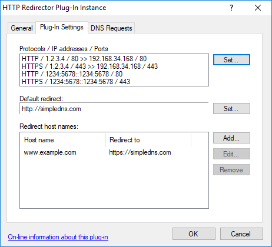

This plug-in redirects HTTP requests for specified host names (and optionally all sub-names).
Redirection can be done either "cloaked" in a frame page (redirect URL not visible in browser) or through a standard 302/301 status response.
The redirect-to URL can be either relative (requested path/query appended) or an exact URL with optional substitutions for host name, path and/or query string.
This can be used for example to redirect to a web-server running on a dynamic IP address (redirecting to a host name updated by a dynamic DNS service) and/or to redirect to a web-server on a non-standard port number (like "http://www.example.com:8000"). These types of redirection services are often offered by domain name registrars and resellers.
Another way that this is often used is for "expired accounts".
For example when an ISP's customer has canceled his web-hosting services, but his domain name is still pointing to the ISP's web-server. In this this scenario, the ISP might redirect such domain names to a central web-site informing visitors why the web-site is unavailable, perhaps a bit of promotion for the ISP etc.
IIS and other web-server applications of course include similar redirection functions, and you can do more advanced redirection through server side scripting (see KB1151). This plug-in sits somewhere in between. It offers more options (cloaking and URL substitutions) than the built-in IIS functions, yet it requires no programming / scripting.
It also allows you to do HTTP redirection in scenarios where a full web-server is not otherwise needed. And finally, it may simply be more convenient to manage this along with the rest of your DNS data.
IMPORTANT: This plug-in requires the use of port 80 TCP (443 for HTTPS) on a static public IP address.
It can however share port 80/443 with IIS (v. 6 and later) running on the same computer, as long as all IIS web-sites are configured with specific host names, or use a different IP address or port number.
For those interested in the technical details - this is possible because instead of binding to port 80 directly, the plug-in uses the Windows HTTP Server API allowing it to share port 80 with any other applications using the API - including IIS.
If the computer running Simple DNS Plus is behind a NAT router or proxy server, you need to "map" port 80/443 TCP from the public Internet IP address to this computer's private IP address.
IMPORTANT: This plug-in requires Windows XP SP2 / Windows Server 2003 or later.
In the plug-in instance dialog / Plug-In Settings tab you can specify the protocols, IP address and ports to listen for HTTP requests on, the default redirect URL, and the host names to redirect:

When you click the first "Set..." button, you can specify how your computer is connected to the Internet and with what IP addresses. It is important that you select the correct connection type as this affects the DNS records served by the plug-in (see below):
Host name redirection is configured in the following dialog:

- Relative URL example:
If the Host name is "www.example.com", and Redirect to value is "http://client23.dyndns.com/example/", and a browser requests "http://www.example.com/test.asp?p=5", then it will be redirected to "http://client23.dyndns.com/example/test.asp?p=5".
- Exact URL with substitution example:
If the Host name is "www.example.com", and Redirect to value is "http://client23.dyndns.com/something.php?h=#HOST#&p=#PATH#&q=#QUERY" and a browser requests "http://www.example.com/test.asp?p=5", then it will be redirected to "http://client23.dyndns.com/something.php?h=www.example.com&p=%2Ftest.asp&q=%3Fp%3D5".
- Status code 302 vs. 301:
The user experience (what happens in the browser) is the same with either status code.
However 301 may cause search engine spiders to update (discard previously indexed pages for the original URL and index the destination URL instead) sooner, whereas 302 may cause this to happen later. Generally, use 302 if the redirection will soon be changed or stopped, otherwise use 301.
The default redirect URL (see first screen shot) is used whenever the plug-in receives a HTTP request which doesn't match any of the listed host names. The plug-in does not serve any DNS records for the default redirect, so to use this DNS records must exist elsewhere.
NOTE: The plug-in also provides DNS host records (A- / AAAA-records) for the specified host names - pointing to the IP address that the plug-in listens for HTTP requests on (or NAT mapped public IP).
If DNS for the specified host names is hosted only on this one DNS server, then you don't need to setup any other DNS records for the host names. However if the host names are served by multiple DNS servers (more typical primary/secondary setup) then you do need to setup matching A-records in local zones etc. as usual. Makes sure to point such A-records to the (public) IP address that the plug-in listens for HTTP requests on.
NOTE: For redirection to work with HTTPS / SSL, you need bind an SSL certificate to the IP address / hostname / port used. This is done the same way as with the HTTP API - as described at https://simpledns.plus/kb/163.